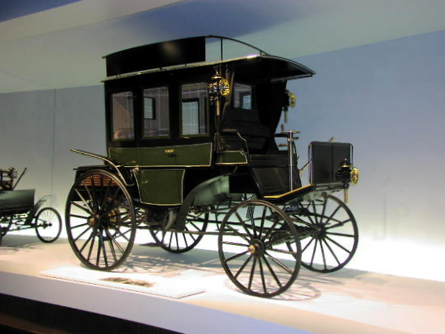
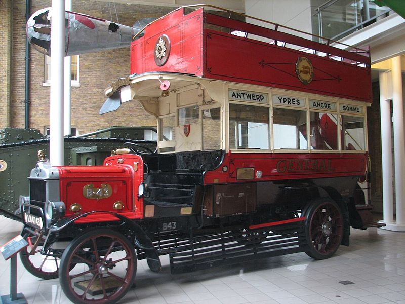
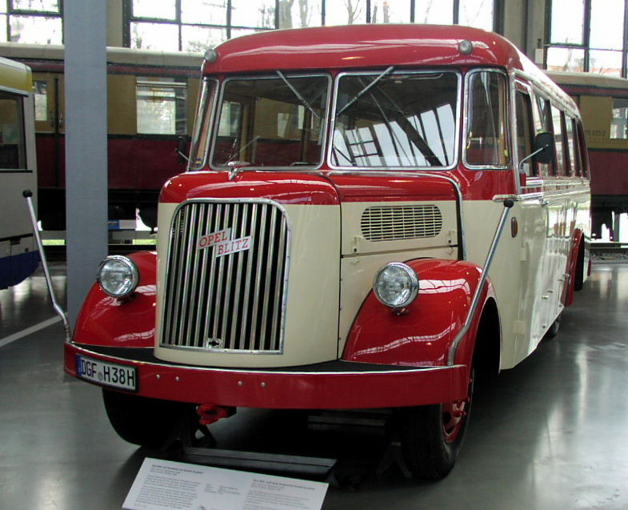

Ônibus
A designação dos veículos de transporte de passageiros varia de país para país e até mesmo de região para região. Várias das designações têm origem da palavra "omnibus" ("para todos" em latim). Este termo foi usado, desde o século XIX, para designar um tipo de transporte coletivo de passageiros puxado a cavalo, usado nas grandes cidades do mundo, com caraterísticas e funções muito semelhantes aos transportes coletivos atuais. No Brasil, os transportes coletivos de passageiros são designados "ônibus", termo originado diretamente em "omnibus".
O conceito de ônibus como modalidade de transporte público tem sua origem na cidade de Nantes, França onde, em 1826, Stanislav Baudry decidiu estabelecer um transporte entre o centro da cidade e as instalações de banhos públicos de sua propriedade em Richebourg, nos arredores da cidade. O serviço combinava as funções das carroças hackney com as das diligências que percorriam uma rota pré-determinada, transportando passageiros e correio. O veículo era dotado de bancos de madeira ao longo do mesmo e a entrada era efetuada por trás. O termo ônibus parece vir do local onde os carros faziam o ponto final, diante de uma chapelaria, cujo dono, Omnes, em um jogo de palavras com seu próprio nome, denominou Omnes Omnibus, "tudo para todos". O nome pareceu bastante apropriado para o novo transporte coletivo e por associação foi adotado por este. Em outras versões da história, porém, ônibus simplesmente decorre de voiture omnibus ("carro para todos")
Seja por emulação direta ou porque a ideia já pairava no ar, em 1832 já teriam sido implementados serviços semelhantes em Bordéus e Lyon. Um jornal de Londres registrou, no dia 4 de Julho de 1829, que "o novo veículo, chamado de omnibus, começou a fazer a ligação de Paddington à cidade". Esse serviço era operado por George Shilibeer. Em Nova Iorque, foram lançados serviços de omnibus no mesmo ano, quando Abraham Brower, um empreendedor que organizou companhias voluntárias de bombeiros, estabeleceu a ligação ao longo da Broadway começando em Bowling Green; seguiram-se outras cidades americanas: Filadélfia em 1831, Boston em 1835 e Baltimore em 1844. Em 1830, o britânico Sir Goldworthy Gurney desenvolveu uma carruagem longa movida a vapor,[10] provavelmente o primeiro ônibus motorizado. Mas, nas grandes cidades onde o transporte coletivo se desenvolvia, a tração animal evoluía para o transporte sobre trilhos. Em 1895, Karl Benz criou o primeiro ônibus movido por um motor a explosão. Dotado de um motor a gasolina de 5 cv, o ônibus de Benz alcançava 15 km/h e transportava até oito passageiros entre as localidades de Netphen e Deutz
